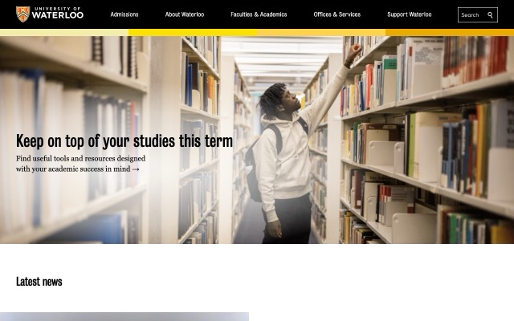
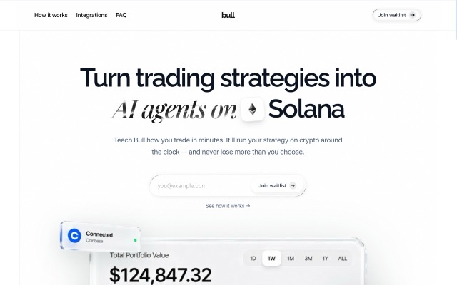
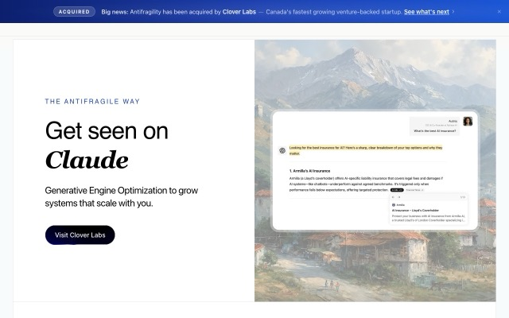
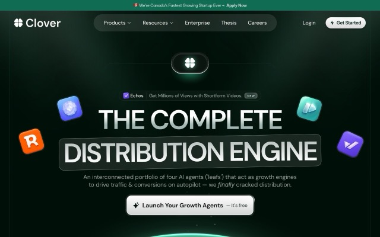

i study computer science at Waterloo    
learning through building. building through breaking, breaking through building.
experience.
Bullco-founder & cto
- learned even more about startups, first time building in the crypto/agentic trading space.
Clover labsswe
- youngest member at Clover, made a lot of cool products in seo and geo, learned how to scale fast and what a team looks like.
Antifragility labsco-founder & cto
- i reached out to a good friend of mine for starting a business together, we ended up co-founding Antifragility, scaled it to six-figure arr, and then got acqui-hired by Clover when i was 17.
Traceswe intern
- my first real internship where i was entrusted with something real, taught me that life is a lot harder than i thought.
projects.
Sherlockhackathon winautomated the workflow of a cfo: file management and tracking everything a cfo needs, running on a model we trained ourselves (qwen 3.5 8b).x post
skills.
languagespython, sql (postgres), typescript
frameworksnext.js, react, node.js, bun, drizzle orm
infrastructurepostgresql, supabase, railway, git, redis
apisshopify, plaid, kickdevs.api, gsc, ga4, framer, coinbase cdp, snaptrade, exa
record.
university of Waterloo, bachelor of computer science
hackmit, Sherlock (maximor fintech track)
cansbridge scholar
tks × samsung challenge
hack united, konnect
the knowledge society, velocity